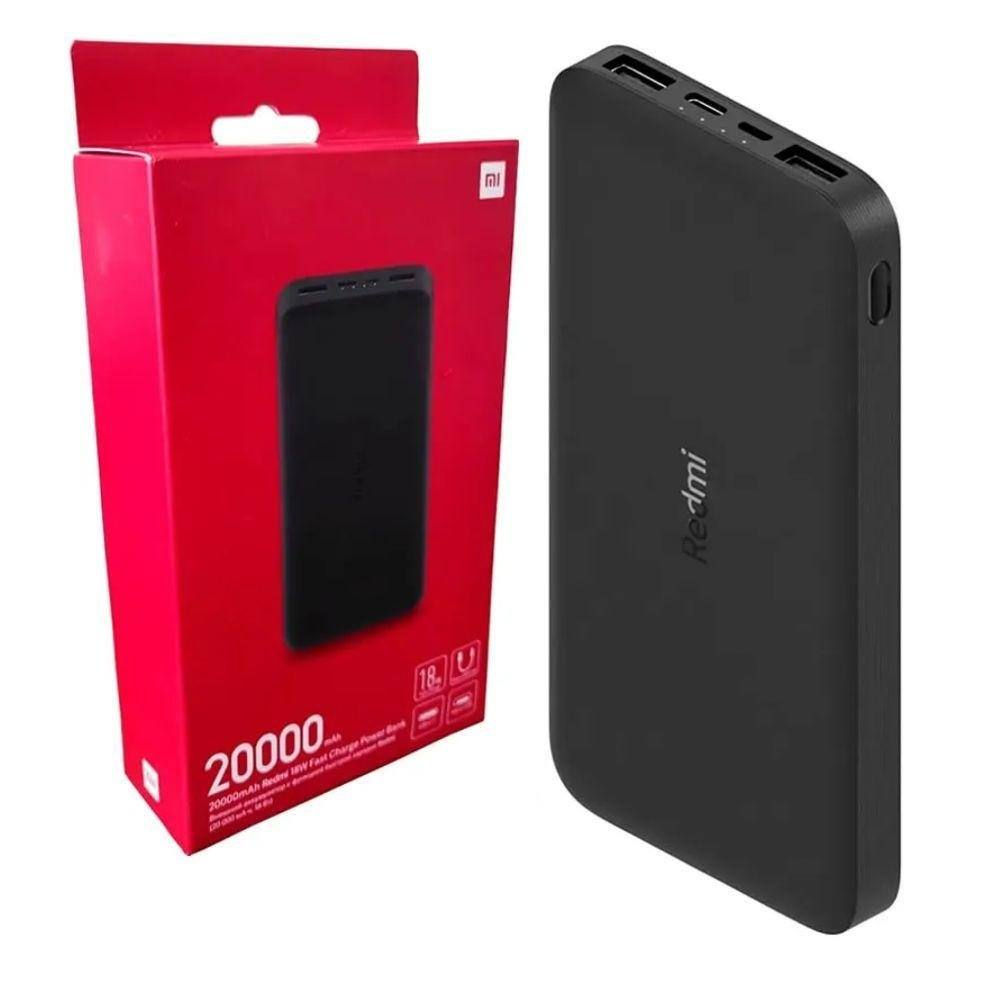
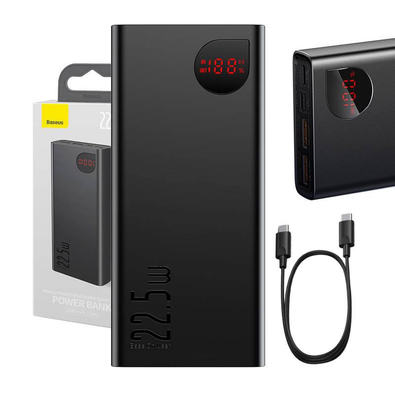
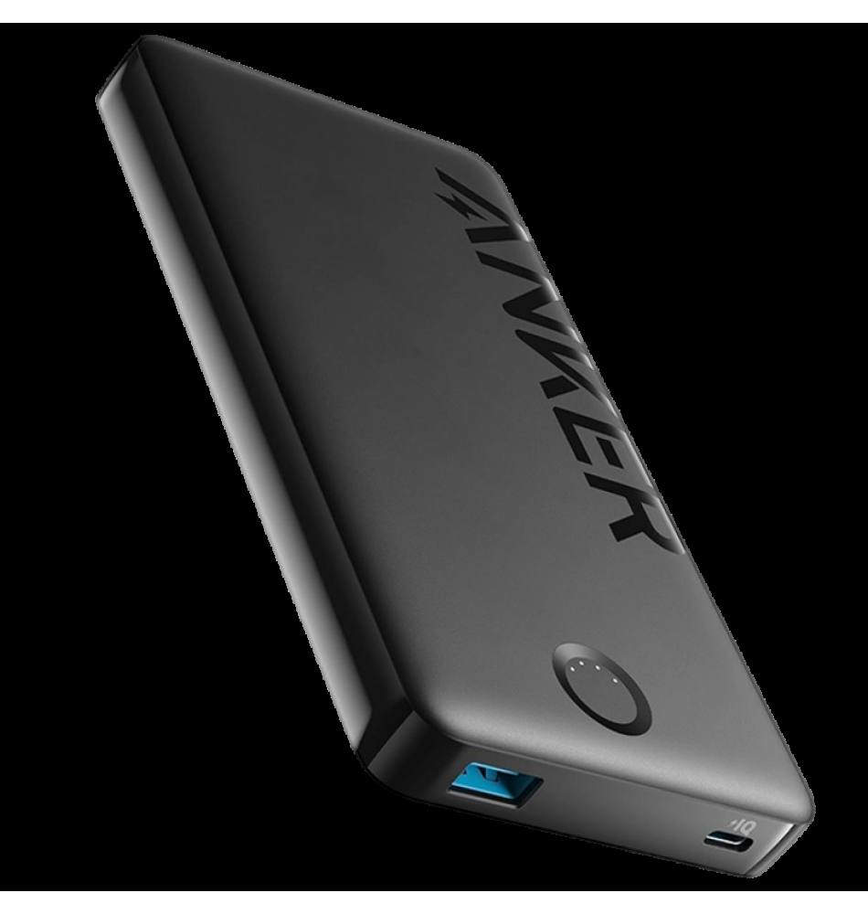
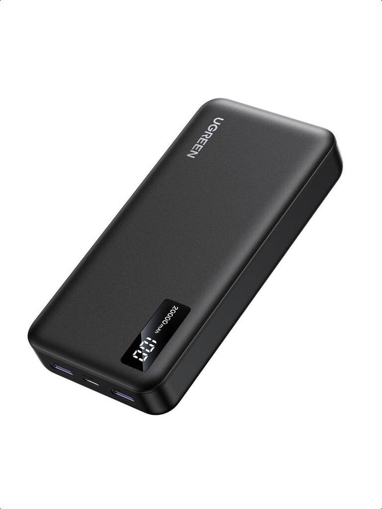
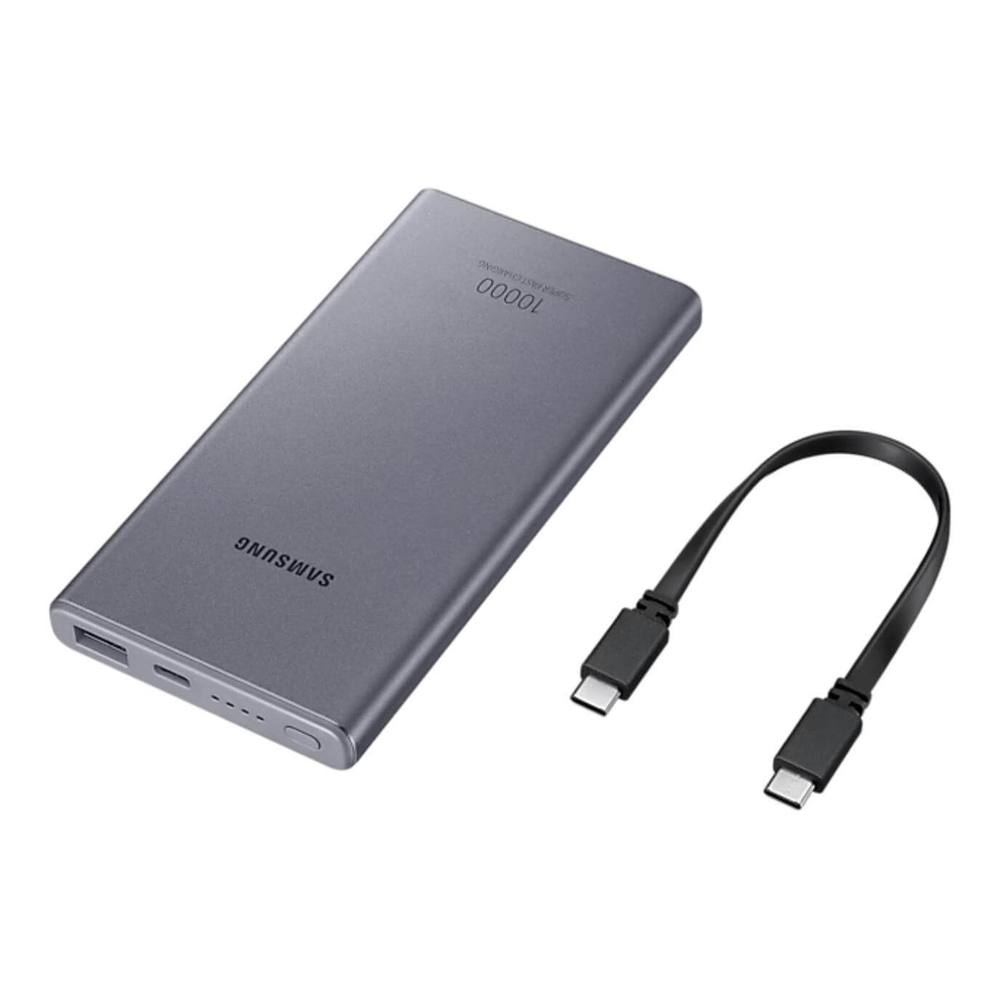

Điện thoại hết pin giữa đường mà không có chỗ sạc, ai cũng từng trải qua cảm giác đó ít nhất một lần. Sạc dự phòng thì nhà nào cũng nên có một cục. Nhưng mua loại nào? Dung lượng bao nhiêu là đủ? Sạc nhanh 22.5W với 18W khác nhau thế nào?
Bài này mình so sánh 5 mẫu sạc dự phòng đáng mua nhất hiện nay, từ bình dân đến cao cấp một chút. Và quan trọng: nói rõ khi nào bạn cần 20000mAh, khi nào 10000mAh là đủ, vì nhiều người mua thừa dung lượng rồi than nặng.
Tiêu chí chọn sạc dự phòng
1. Dung lượng thật, không phải số quảng cáo
Lưu ý quan trọng: cục 10000mAh không sạc đầy được 2 lần cho điện thoại pin 5000mAh. Do hao hụt chuyển đổi điện áp, dung lượng thực tế chỉ khoảng 60-65% số ghi trên vỏ. Tức là:
- 10000mAh → sạc được khoảng 1.2-1.5 lần cho điện thoại pin 5000mAh.
- 20000mAh → sạc được khoảng 2.5-3 lần.
2. Công suất sạc nhanh
18W là mức tối thiểu nên có năm 2026. 22.5W sạc nhanh hơn rõ rệt cho điện thoại hỗ trợ. Còn nếu bạn dùng laptop sạc qua USB-C, hãy tìm loại hỗ trợ PD 45W-65W.
3. Số cổng và loại cổng
Ít nhất phải có 1 cổng USB-C vừa sạc vào vừa sạc ra. Hai cổng USB-A thêm thì tiện khi sạc cùng lúc điện thoại và tai nghe.
4. Kích thước và trọng lượng
Cục 20000mAh thường nặng 400-450g, bằng 2-3 cái điện thoại. Bỏ balo thì ổn, bỏ túi quần thì hơi cực. Đi làm hàng ngày, nhiều người thấy 10000mAh (~200g) là vừa đẹp.
5. Thương hiệu và an toàn
Sạc dự phòng là cục pin lithium bỏ trong túi, trong balo. Đừng bao giờ mua hàng không tên tuổi, nguy cơ phồng pin, cháy nổ là có thật. Cứ chọn hãng lớn: Xiaomi, Anker, Baseus, Ugreen, Samsung.
Top 5 sạc dự phòng đáng mua 2026
Minh bạch: các nút "Xem giá" trong bài là link affiliate Shopee. Bạn mua giá không đổi, mình nhận một khoản hoa hồng nhỏ để duy trì blog.
| # | Mẫu | Dung lượng | Sạc nhanh | Giá tham khảo |
|---|---|---|---|---|
| 1 | Xiaomi Power Bank 20000mAh | 20000mAh | 18W | ~450.000đ |
| 2 | Baseus 20000mAh | 20000mAh | 22.5W | ~550.000đ |
| 3 | Anker 323 (PowerCore) | 10000mAh | — | ~500.000đ |
| 4 | Ugreen 20000mAh PD | 20000mAh | PD 22.5W | ~600.000đ |
| 5 | Samsung Battery Pack | 10000mAh | 25W | ~600.000đ |
1. Xiaomi Power Bank 20000mAh 18W

Giá tham khảo: khoảng 450.000đ (giá thay đổi theo đợt sale)
Gọi là "quốc dân" vì lý do chính đáng: rẻ, bền, an toàn. 450 nghìn cho 20000mAh của Xiaomi, khó có hãng nào cạnh tranh được ở tầm giá này. Sạc nhanh 18W hai chiều (sạc vào cũng nhanh, không phải chờ cả đêm). Thiết kế nhôm nguyên khối cầm chắc tay, có 2 cổng USB-A + 1 cổng USB-C. Nhược điểm duy nhất là hơi nặng (440g) và không có màn hình hiển thị phần trăm pin, chỉ có 4 đèn LED báo mức.
- Giá tốt nhất phân khúc 20000mAh
- Sạc nhanh 18W hai chiều
- Vỏ nhôm bền, tản nhiệt tốt
- Thương hiệu uy tín, ít lỗi vặt
- Nặng 440g, không hợp bỏ túi quần
- Chỉ có đèn LED, không hiển thị % pin
Hợp với ai: mọi nhà, muốn một cục ngon-bổ-rẻ dùng lâu dài.
Xem giá tốt nhất trên Shopee →2. Baseus 20000mAh 22.5W

Giá tham khảo: khoảng 550.000đ (giá thay đổi theo đợt sale)
Thêm 100 nghìn so với Xiaomi để đổi lấy sạc nhanh 22.5W và màn hình LED hiển thị phần trăm pin, theo mình là đáng. Sạc 30 phút được khoảng 50% pin điện thoại hỗ trợ sạc nhanh, khác biệt thấy rõ khi đang vội. Baseus làm phụ kiện thì chất lượng ổn định, ít phàn nàn về pin phồng. Có 3 cổng ra, sạc cùng lúc 2-3 thiết bị được.
- Sạc nhanh 22.5W, khác biệt rõ khi vội
- Màn hình LED hiển thị % pin chính xác
- 3 cổng, sạc nhiều thiết bị cùng lúc
- Đắt hơn Xiaomi khoảng 100k
- Vẫn nặng tương đương (~440g)
Hợp với ai: người muốn sạc nhanh hơn, thích nhìn % pin còn lại.
Xem giá tốt nhất trên Shopee →3. Anker 323 (PowerCore 10000mAh)

Giá tham khảo: khoảng 500.000đ (giá thay đổi theo đợt sale)
Anker là hãng sạc dự phòng được tin nhất thế giới, và con 323 này là lý do: nhỏ gọn (chỉ ~200g, bằng một cái điện thoại), sạc nhanh 2 chiều, cell pin loại tốt nên tuổi thọ cao, dùng 2-3 năm pin vẫn khỏe, không bị chai nhanh như hàng rẻ. Dung lượng 10000mAh đủ cho 1 ngày đi làm. Ai ghét mang nặng thì đây là lựa chọn số một.
- Nhỏ gọn nhẹ nhất danh sách (~200g)
- Pin bền, ít chai sau thời gian dài
- Thương hiệu số 1 về độ tin cậy
- 10000mAh, đi xa 2-3 ngày thì không đủ
- Giá cao so với dung lượng
Hợp với ai: người đi làm hàng ngày, ghét mang nặng trong túi.
Xem giá tốt nhất trên Shopee →4. Ugreen 20000mAh PD 22.5W

Giá tham khảo: khoảng 600.000đ (giá thay đổi theo đợt sale)
Con này dành cho ai dùng nhiều thiết bị: hỗ trợ PD (Power Delivery) nên sạc được cả iPhone, iPad ở tốc độ tối ưu, thậm chí "cứu" được laptop văn phòng khi cần. Màn hình LED, 3 cổng, vỏ nhựa nhám chống xước. Giá cao nhất danh sách nhưng nếu bạn là người "một cục sạc cho tất cả", thì đây là khoản đầu tư hợp lý.
- Hỗ trợ PD, sạc được cả laptop/iPad
- Tương thích tốt với iPhone
- Màn hình LED, 3 cổng ra
- Giá cao nhất danh sách
- Hơi to, không gọn bằng Anker
Hợp với ai: người nhiều thiết bị, cần sạc cả laptop và iPad.
Xem giá tốt nhất trên Shopee →5. Samsung Battery Pack 10000mAh 25W

Giá tham khảo: khoảng 600.000đ (giá thay đổi theo đợt sale)
Nếu bạn dùng điện thoại Samsung, con này là "cặp bài trùng": sạc siêu nhanh 25W đúng chuẩn Samsung, không bị bóp công suất như sạc hãng khác. Thiết kế mỏng đẹp, màu sắc hợp với máy Samsung. Nhược điểm là giá cao cho 10000mAh, và với máy không phải Samsung thì nó cũng chỉ như cục sạc thường, không phát huy hết.
- Sạc siêu nhanh 25W chuẩn Samsung
- Mỏng nhẹ, thiết kế đẹp
- Chính hãng, an toàn tuyệt đối
- Chỉ phát huy hết với máy Samsung
- Giá cao so với dung lượng 10000mAh
Hợp với ai: người đang dùng điện thoại Samsung, muốn đồng bộ hệ sinh thái.
Xem giá tốt nhất trên Shopee →Mua ở đâu để không dính hàng giả?
Sạc dự phòng là món bị làm giả nhiều nhất nhì trong đồ công nghệ, vì cục giả nhìn bề ngoài gần như y hệt. Mấy nguyên tắc của mình:
- Chỉ mua ở gian hàng chính hãng (Shopee Mall) hoặc shop có rating cao, nhiều lượt bán. Đừng ham rẻ hơn 30-40% so với giá thị trường, gần như chắc chắn là hàng dựng.
- Kiểm tra mã xác thực trên vỏ hộp khi nhận hàng. Xiaomi, Anker, Baseus đều có tem cào mã để check trên website hãng.
- Cân thử: cục 20000mAh thật nặng khoảng 430-450g. Cầm lên thấy nhẹ hều (dưới 350g) thì bên trong khả năng cao là cát hoặc pin rởm, trả hàng ngay.
Các link "Xem giá trên Shopee" trong bài này mình đều trỏ về gian hàng uy tín, bạn cứ yên tâm bấm.
Cách mình chấm điểm (công khai)
| Tiêu chí | Trọng số |
|---|---|
| Dung lượng sử dụng thật | 30% |
| Tốc độ sạc | 25% |
| An toàn mạch & thương hiệu | 25% |
| Kích thước & trọng lượng | 10% |
| Giá | 10% |
Điểm mỗi sản phẩm là trung bình có trọng số theo các tiêu chí trên, dựa trên đánh giá thật của người mua và thông số hãng công bố.
Kết luận: nên mua loại nào?
- Ngon - bổ - rẻ, dùng cho mọi nhà: Xiaomi 20000mAh 18W.
- Muốn sạc nhanh hơn, có màn hình % pin: Baseus 20000mAh 22.5W.
- Đi làm hàng ngày, ghét mang nặng: Anker 323 10000mAh.
- Nhiều thiết bị, cả laptop/iPad: Ugreen 20000mAh PD.
- Dùng điện thoại Samsung: Samsung Battery Pack 25W.
Quy tắc nhanh của mình: đi làm hàng ngày thì 10000mAh là đủ, nhẹ nhàng; đi du lịch, đi xa thì mới cần 20000mAh. Đừng mua thừa rồi than nặng.
Câu hỏi thường gặp
Sạc dự phòng để lâu không dùng có sao không?
Pin lithium để cạn kiệt lâu ngày sẽ chai nhanh. Nếu ít dùng, mỗi 2-3 tháng lấy ra sạc đầy một lần, bảo quản nơi khô ráo là được.
Sạc dự phòng dùng được mấy năm?
Pin lithium thường giữ được khoảng 300-500 chu kỳ sạc đầy trước khi dung lượng giảm rõ rệt. Với người dùng bình thường (sạc 2-3 lần/tuần), một cục sạc hãng tốt dùng 2-3 năm là chuyện thường. Dấu hiệu nên thay: sạc đầy nhanh bất thường nhưng cũng hết nhanh, hoặc vỏ bắt đầu phồng lên, trường hợp phồng pin thì ngưng dùng ngay.
Có được mang sạc dự phòng lên máy bay không?
Được, nhưng phải để ở hành lý xách tay, không được ký gửi. Hầu hết hãng cho phép pin dưới 100Wh (tương đương khoảng 27000mAh), cả 5 mẫu trên đều đủ điều kiện.
Sạc dự phòng sạc vào mất bao lâu?
Tùy công suất sạc vào: loại hỗ trợ sạc nhanh 18W thì cục 20000mAh đầy trong khoảng 5-6 tiếng; loại sạc thường 10W có thể mất 10 tiếng. Nên sạc qua đêm.